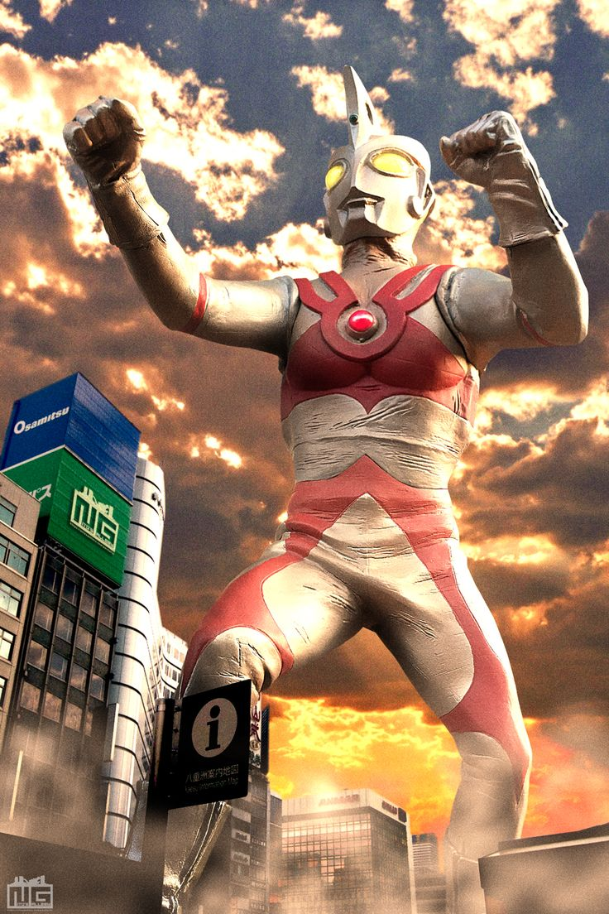

About Ace
Ultraman Ace arrived on Earth as a courageous protector specifically tasked with defending the planet against the Terrible-Monsters, biological weapons created by the interdimensional villain Yapool. Unlike his predecessors, Ace initially required two human hosts—Seiji Hokuto and Yuko Minami—who would leap into the air and touch their Ultra Rings together to initiate his transformation. Known as the "Master of Beam Techniques," Ace possesses the widest variety of energy attacks among the Ultra Brothers, most notably the Metallium Beam and the devastating Ultra Guillotine.